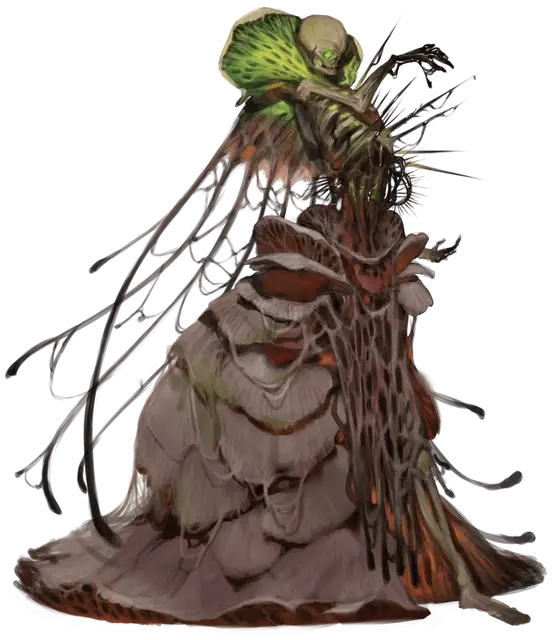

Лишайниковый лич
Lichen Lich
Средняя Нежить

Класс Доспеха 20 (природный доспех)
Хиты 225 (30к8 + 90)
Скорость 30 футов
| мод | спас | ||
|---|---|---|---|
| СИЛ | 11 | +0 | +0 |
| ЛОВ | 16 | +3 | +3 |
| ТЕЛ | 16 | +3 | +9 |
| мод | спас | ||
|---|---|---|---|
| ИНТ | 14 | +2 | +8 |
| МДР | 20 | +5 | +11 |
| ХАР | 16 | +3 | +9 |
Навыки Восприятие +11, Выживание +11, Медицина +11, Природа +14
Сопротивление урону некротическая энергия, холод
Иммунитет к урону яд
Иммунитет к состояниям отравление, паралич, очарование, испуг, ошеломление, истощение
Чувства истинное зрение 120 футов, пассивное Восприятие 21
Языки Общий, Друидический, Сильван
Опасность 18 (20000 опыта)
Бонус мастерства +6
Особенности
Легендарное сопротивление (3/день). Если лишайниковый лич проваливает спасбросок, он может вместо этого сделать спасбросок успешным.
Восстановление. Если у лича есть филактерий, лишайниковый лич через 1к10 дней после уничтожения получает новое тело, восстанавливает все хиты и становится живым. Новое тело появляется в пределах 5 футов от филактерия.
Действия
Мультиатака. Лишайниковый лич совершает четыре атаки.
Ядовитое прикосновение. Рукопашная атака оружием: +9 к попаданию, досягаемость 10 фт., одно существо. Попадание: 17 (5к6) урона ядом, и цель должна преуспеть в спасброске Телосложения Сл 19, иначе становится отравленной в течение 1 минуты. Цель может повторять спасбросок в конце каждого своего хода, оканчивая на себе эффект в случае успеха.
Иссушение. Дальнобойная атака заклинанием: +9 к попаданию, дистанция 60 фт., одна цель. Попадание: 14 (4к6) урона некротической энергией.
Огненная буря (7-й уровень заклинания; 1/день). В выбираемых лишайниковым личём до десяти кубов с длиной ребра 10 фт., начинается огненная буря. Каждый куб должен находиться в пределах 150 футов от лишайникового лича, занимая видимое им пространство и каждый куб должен иметь хотя бы одну общую грань с другим кубом. Все существа в этой области должны совершить спасбросок ЛовкостиСл 19, получая 38 (7к10) урона огнём в случае провала и половину этого урона в случае успехе. Огонь поджигает горючие предметы в области, которые никто не несёт и не носит. Если лишайниковый лич пожелает, растения не будут затронуты этим заклинанием.
Использование заклинаний. Лишайниковый лич накладывает одно из следующих заклинаний, используя Мудрость в качестве базовой характеристики заклинаниям (Сл спасброска 19):
• Неограниченно: искусство друидов [druidcraft]
• 3/день каждое: обнаружение магии [detect magic], туманное облако [fog cloud], бесследное передвижение [pass without trace]
• 1/день каждое: преграда жизни [antilife shell], рассеивание магии [dispel magic], разговор с растениями [speak with plants], рутешествие через растения [transport via plants]
Легендарные действия
Лишайниковый лич может совершить 3 легендарных действия, выбирая из представленных ниже вариантов. За один раз можно использовать только одно легендарное действие, и только в конце хода другого существа. Лишайниковый лич восстанавливает использованные легендарные действия в начале своего хода.
Атака. Лишайниковый лич совершает атаку.
Ядовитый укол (стоит 2 действия). Лишайниковый лич нацеливается на одно отравленное существо, которое он может видеть в пределах 30 футов. Цель должна преуспеть в спасброске Телосложения Сл 19, иначе упадёт без сознания до тех пор, пока не закончится её отравленное состояние.
Жизненный сок (стоит 2 действия). Лишайниковый лич нацеливается на одно существо, которое он может видеть в пределах 30 футов. Цель должна преуспеть в спасброске Телосложения Сл 19, иначе получит 11 (2к10) урона некротической энергией и лишайниковый лич восстанавливает количество хитов, равное количеству нанесённому существу урона.
Действия логова
При значении инициативы «20» (в случае ничьей проигрывает всем конкурентам) лишайниковый лич может совершить действие логова, чтобы вызвать один из следующих эффектов:
• Ядовитые споры заполняют видимый лишайниковым личём 10-футовый куб в пределах 120 футов от него. Любое существо впервые входящее в облако спор во время своего хода или начинающее в нём свой ход, должно преуспеть в спасброске Телосложения Сл 19, иначе станет отравленным до конца своего следующего хода. Облако спор существует в кубе 1 минуту или пока его не разгонит сильный ветер.
• Лишайниковый лич повелевает силами своей искаженной рощи, создавая ползающую насыпь появляющуюся в свободном пространстве в пределах 30 футов от лишайниковаго лича и действующую по собственной инициативе, подчиняясь приказам лишайникового лича. Ползающая насыпь погибает через 1 час или когда лишайниковый лич снова использует это действие логова.
• Гнилые корни и лозы магическим образом прорываются из земли 20 футовым радиусов из точки видимой лишайниковым личём в пределах 120 футов. Лишайниковый лич не подвержен влиянию корней и лоз, для всех же остальных существ эта область становится труднопроходимой местностью, и каждое существо в этой области должно преуспеть в спасброске Силы Сл 19, иначе станет опутанным корнями. Действием, существо может попытаться высвободить себя или другое существо в пределах своей досягаемости, совершив успешную проверку Силы (Атлетика) Сл 19. Корни и лозы увядают, когда лишайниковый лич снова использует это действие логова или когда он погибает.
Описание
Лишайниковые личи - это ставшие нежитью могущественные друиды.
Лишайниковый лич выглядит как скелет покрытый грибами и лишайником, похожим на кору. На месте грудной клетки, у лишайникового лича извиваются лозы источающие вязкую и ядовитую чёрную жидкость.